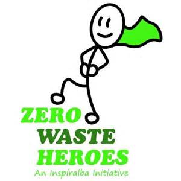
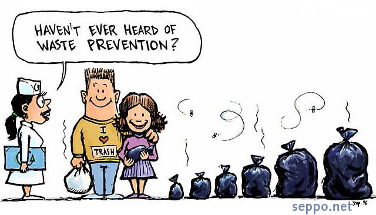

Inspriation
As I was reading about climate change in news articles everyday, I was wondering other than blaming our governments and big industries what can I do? I always had a philosophy of less energy waste, be it electric, gas or my mental energy, I always tried to conserve it. People use a term for me when I try to conserve my physical energy, what is it...ahh!!! Lazy. People. So once I came across a blog and it talked about how we can stop filling our oceans with garbage by creating less trash in our everyday life. So I am now trying to create a difference one step a time.

How I started
There are three major ideas I included in my lifestyle.
- Recycling - I try to avoid stuff I can't reuse but if I have to buy anything that can't be in my life forever I recycle it.
- Buy Local - Since I have started buying from local stores and marketd I can easily avoid unnecessary packaging which makes a big part of our trash cans.
- Reuse - A major idea in Zero waste community is to reuse as much as you can and thrift from others instead of buying new because it will create less packaging waste and less landfill too.
How it is helping me
My Zero Waste efforts are not only helping enviornment but it is helping me too personally . How?
- Health : Now it is a well known subject that plastic is not good for our health. Zero waste has given me another reason to not to bring this immortal monster in my kitchen. And I am not eating packaged food now so that leaves me with healthy options.
- Money: You are thinking before buying so that saves money, a lot of it.
- Feel Good Factor: I am doing something productive for every aspect of my life. And I have less clutter to manage. It is really a win-win situation here.
5 Rules of Zero Waste I go by (Learned them from the internet)
- Refuse what you do not need
- Reduce what you do need
- Reuse what you consume
- Recycle what you cannot Refuse, Reduce or Reuse
- Rot (Compost) the rest
Success Stories
Here are few stories which inspired me and still do when I find it difficult.
- Lauren Singer: She is the first person who introduced the concept of Zero Waste to me. She now owns a Zero Waste store in New York. This is her blog .
- Bea Johnson: She is considered as flag bearer in this community. You can read about her here .
- My Grandma: We were not always wrapped in plastic and so weren't our oceans. I think what and how my grandma would do here and most of the time I get an easy and inspirational answer.
And its funny too....
